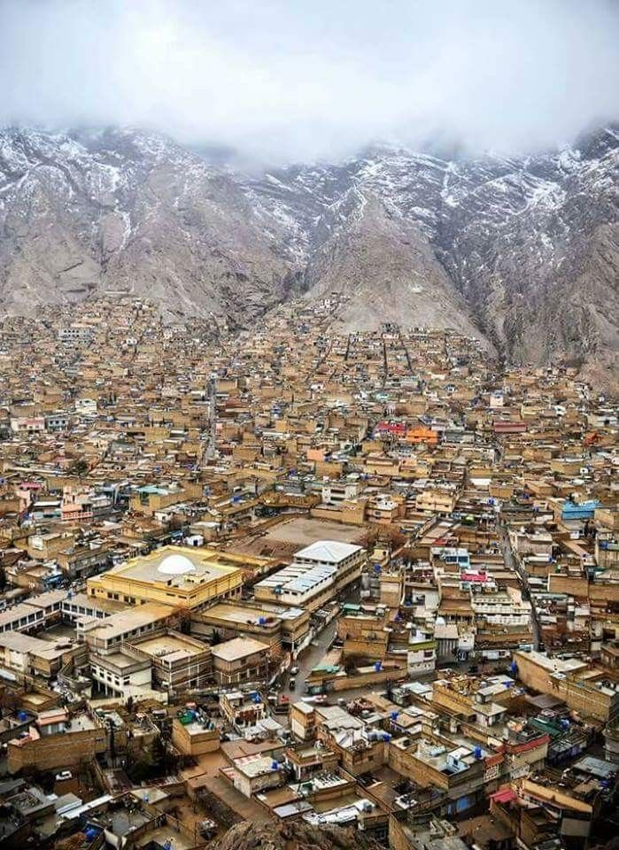

quetta is the tenth most populous city in Pakistan with a population of over 1.1 million. It is situated in the south-west of the country, surrounded by mountains. It is the capital of the province of Balochistan where it is the largest city. The city is known as the "Fruit Garden of Pakistan" due to the numerous fruit orchards in and around it, and the large variety of fruits and dried fruit products produced there. Located in northern Balochistan near the Pakistan-Afghanistan border and the road across to Kandahar. The city is near the Bolan Pass route which was once one of the major gateways from Central Asia to South Asia. It is currently home to 500,000 undocumented Afghan refugees.
Famous Places in Quetta
|  | " |